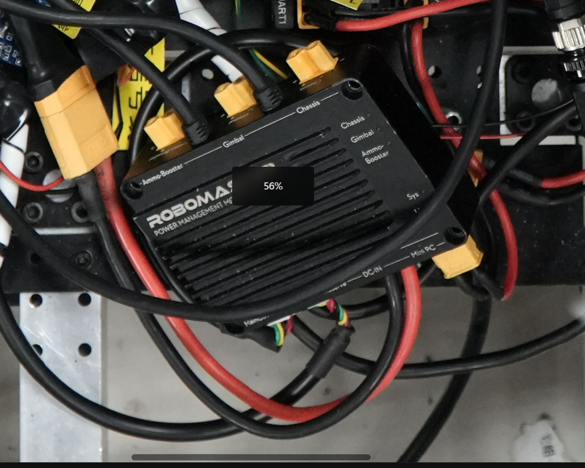

【RM】机械应该知道的电控小常识
本篇博文应机械组的呼唤，特此编写一下。总体而言，这会涉及到走线过程中的各个设计处理细节。
对于机械设计预留空间的必要性，使用条目前的【@】来表示，越多@越重要。
- 【@@@】必须要做到的
- 【@@】需要额外留意的点
- 【@】有的话最好，来自电控的感谢
认识各个元件
认识元件，除了了解他们的外形尺寸以外，还要注意上面的端口。虽然有的模型会把电源线标出来，但是这并不代表除了电源线就不需要考虑别的。
电机电调
以下是目前我们队伍常用的电机和电调。
3508和C620
{kind=link}
{kind=link}
{kind=link}
对于机械来讲，图纸上最经常出现的是最右边的形态——一个电机后面拖了一根线。但是3508没有电调就不能工作，中间图才是它日常的工作形态。
你需要注意的：
- 【@@@】7Pin数据线一个电机只有一根，只有一根，长度也很固定。三相电源线对接起来也差不多这么长。所以不要让C620离电机太远。
- 【@@@】三相电源线对接的接口很硬，不要在这个地方有弯折。
- 【@@@】电调安装位置需要好好考虑，最好固定，C620有螺丝孔。
- 【@@@】小心不要拧穿3508的屁股（（（并且要把屁股包起来（
- 【@@】接口附近的电源线容易破皮导致短路，如果需要在接口附近弯折，至少要让弯曲半径大一点。
- 【@@】第一张图中的⑦⑧一面会插线（信号+电源），请留出空间！！
- 【@】第一张图中的③④一面最好在容易够到的地方。
- 【@】pwm控制的摩擦轮3508，需要注意左右（不然会吃弹丸），请及时联系电控。
- 【@】请安装时留意电源线（安装电机）的方向，提前和电控沟通，不要出现摩擦和压到的可能性。比如麦轮电控说，电机的线要在外侧。

2006和C610
 C610和2006
C610和2006{kind=link}
和3508类似，二者也需要配套使用。区别在于C610不是很好安装，两侧的螺丝孔从来没人用过。一般都是扎带或者双面胶。
你需要注意的：
- 【@@@】不要让C610离电机太远。
- 【@@@】三相电源线对接的接口很硬，不要在这个地方有弯折。
- 【@@】接口附近的电源线容易破皮导致短路，如果需要在接口附近弯折，至少要让弯曲半径大一点。
- 【@@】考虑好安装位置，至少需要和板材贴合。
- 【@】请安装时留意电源线的方向，不要出现摩擦和压到的可能性。
- 上图中的C610安装位置相当难受，没有考虑到线材大幅度弯折、大幅度旋转的问题，虽然图上暂时用扎带绑了一下，但是不是长久之计。
6020
{kind=link}
6020并不需要搭配电调，但是因为用在yaw轴，很难拆装，所以依然有很多需要注意的地方。
你需要注意的：
- 【@@@】接口需要接线，安装前请和电控沟通走线事宜。电源接口不易弯折。信号口不宜弯折，易损伤。
- 【@@@】底部还有一排开关，请联系电控进行操作（设定CAN id）。
- 【@@】信号口可能需要频繁插拔。如果方向很阴间的话就等着加班拆头吧。
DM4310
{kind=link}
{kind=link}
达妙的电源线比较特殊，一般两个里面留一个就可以了。
你需要注意的：
- 【@@@】接口需要接线，电源接口不易弯折。信号口不宜弯折，易损伤。
- 【@@】注意旋转过程中可能出现的拉扯，压迫等。
- 【@】调试串口和指示灯最好露出来，最好在旋转以后可以露出来。
C板
错误频繁出现！！
{kind=link}
作为核心控制板，C板是各个信号线的汇总处。因此这块板子除了背面和两个短边的侧面以外，都是需要接线的。
你需要注意的：
- 【@@@】C板要有孔位，不然陀螺仪（算倾斜角之类的传感器）会抖得很厉害。
- 【@@@】C板正面、侧面，都需要频繁插拔线材，因此设计在可以够到的地方很重要，并且合上盖后留足空间，线材都不能弯折。
- 【@@】陀螺仪有方向，C板安装也要注意方向。
- 【@@】上图中，
SWD接口连的是DAP（烧录程序用的小方块），DBUS接口连的是遥控器接收机，CAN连的是电机的信号，UART1&2用来接收裁判系统数据或者NUC数据，电源输入会连XT30接口，每个口都有用！！！ - 【@】插拔线的位置不要和螺丝杯头有干涉
分电板
错误频繁出现！！
{kind=link}
{kind=link}
{kind=link}
作为电源和CAN信号的中转站，分电板小小的，但是承受了很多。
你需要注意的：
- 【@@@】分电板上的所有电源接口都会使用到，凡是电源接口，都不易弯折，需要预留的空间很大。
- 【@@@】3508的电源插头是弯的，并且不能线朝板内侧，所以侧边要留很长一段，或者和电控沟通好（
- 【@@】侧边的小的端口，用来插信号线，也很重要
- 【@@】分电板要易插拔，并提前确定安装位置，以便焊接正确长度的线。
- 【@】分电板最好有螺丝孔固定
超级电容（控制板和电容板）
超电我暂时没有图片，并且控制板和电容板也有各种不同的尺寸，每个兵种使用的超电各不相同。
你需要注意的：
- 【@@】预留充足的空间（上下和侧边用来接线），超级电容组和控制板之间的距离短一些，并预先设计底盘&电管–》超电–》电容
- 【@@】超电一定要固定+绝缘，不要让螺丝掉在上面
- 【@】确定好安装位置以后就不要移动了捏
NUC
说实话我害怕写错，等视觉老登提建议！！
{kind=link}
{kind=link}
你需要注意的：
- 【@@@】保护好NUC，稳定，防止短路，抗击打
- 【@@@】要留哪些口问视觉去（
认识裁判系统
对于机械来说，裁判系统是各种安装规范。但是对于电控来说，裁判系统是又粗又没法随便改变长度的航空线，至少5cm不能弯折的接头，绕在车上的某个阴暗角落，然后莫名其妙被夹到，莫名其妙断信号。
电源管理模块
超级重要，万物起源！！
{kind=link}
{kind=link}
{kind=link}
上面的实物图，已经很清楚了吧。那么接下来展示一下，每个接口要连到哪里去。
{kind=link}
- 装甲板6Pin线
- 直接连场地交互
- 不用管 和2等价
- 主控模块接口
- 连接至测速模块、UWB 模块、相机图传模块和灯条模块
- 对于麦轮（单上C板），要连接到滑环，然后通过滑环接到C板上的UART
- 不用管
- XT60输入接口，一般直接接到电池上
- 接C板和NUC
- 底盘电源输出
- 云台电源输出
- 发射机构电源输出
在明白了基本的使用场景后，你会发现：电管连的东西是最多的！那么，
你需要注意的：
- 【@@@】预留充足的空间用来走线，每根线都很难弯曲。
- 【@@@】固定的位置要确定，最好不要离分电板（⑩的输出接分电板给底盘电机）、电池（直接接到⑧）、主控（不然要用航空线延长）太远。
- 【@@】注意有一些线比较难连接（比如航空插），要么有空间直接接，要么接好了再装
- 【@】放在容易维护的地方，且固定牢靠。
- 反例：工程设备舱中的电管，随便乱挂，螺丝孔=摆设。
- 注意：电管的安装直接决定了走线的难度，拆装裁判系统的简易性。
装甲板
{kind=link}
{kind=link}
装甲板安装在装甲板支架上，如果没有安装牢，装甲板就不会有电，有时候还会出现只有电没有信号。
你需要注意的：
- 【@@@】很难走线，请给航空线规划好空间。
- 【@@】线也很难插上去，装甲板装好以后再插略折磨。
- 【@】装的时候如果电控在旁边，让他上电测试一下，否则你也不想返工吧。
- 走线时需要【回环连接】
其他裁判系统模块
相对来讲不是很需要机械配合走线，先不管了。
走线的艺术
宏观空间规划
首先请看一个反例：
{kind=link}
{kind=link}
这个案例生动的解释了，即使设备舱很大，如果重要元件没有合理安排位置，也会出现乱七八糟的现象。尤其是在零散元件多的情况下。盘旋在C板、分电板之上的，是黑色的航空线。红色和黑色互相缠绕、交错，紧挨但不能接触，因为一不小心，就会炸出绚丽的烟花（x装文艺失败）。
典型的错误包括：
- 电管没有设计螺丝孔
- 电源线（尤其是12awg的）过长，一部分是电管、电池、分电板位置引起的蝴蝶效应
- 没有为零散元件设计固定位置。继电器悬在半空，分电板和C板周围都是螺丝杯头。尤其是气泵在接上气嘴、气管以后，会挣脱双面胶。
说完了错误案例，来看看比较好的案例：
{kind=link}
{kind=link}
{kind=link}
- 碳板之间的空层，一整层！！可以用来随便走线
- 装甲板的线从背后穿出来以后，有地方扎扎带
- 可以依靠铝方和碳管直角走线！！直角！！！；电调有固定位置
扎带扎起来
扎带在走线过程中的使用相当的常见，比如：
- 固定在铝方上（前提是铝方上有孔可以穿过去），板材上，有孔的地方几乎都可以传过去
- 把多股线合并
- 把过长的线扎在一起
{kind=link}
{kind=link}
但是，扎带不能解决的问题也有很多：
- 比如底盘的自适应悬挂，会产生较大范围的挪动，所以不能扎在会活动的部分，并且要留合适的长度。太长，磨电机；太短，线扯断。
- 如果线长的太多，绕很多圈扎起来，体积就会很大。对于pitch的后脑勺，就比较容易压到。
- 没有孔就没法扎。
走线正面案例
总结
走线是一件相当重要的事，在联盟赛之前，包括我在内的电控没有特别对此进行关注。走线上的细节，决定了很大一部分的电控稳定性，机械掉了个轮子还能勉强跑一跑，哪里一短路，哪里信号线断了，就连动都不能动了。线材的处理，是机械和电控共同的努力。机械留的位置合理，空间大，电控的操作空间也大。细致的走线，有逻辑的排布，会让检修轻松许多。
感谢各位支持，本文还会吸收各方建议，进行热更新。